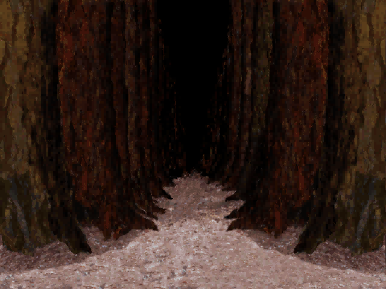
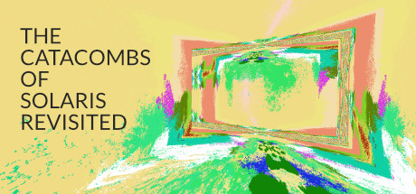
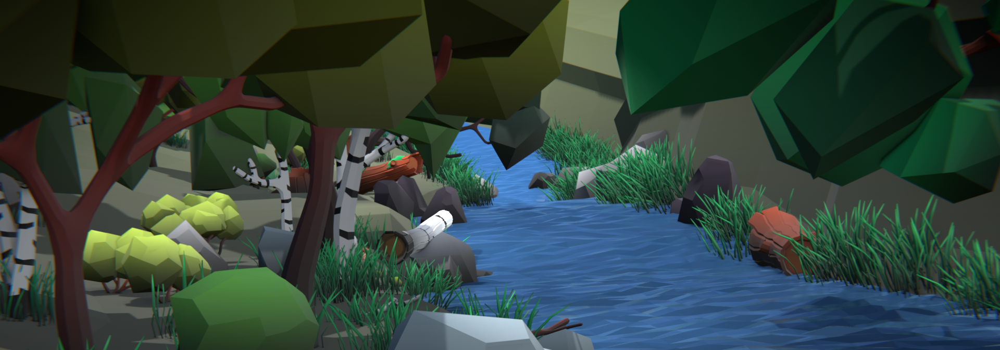
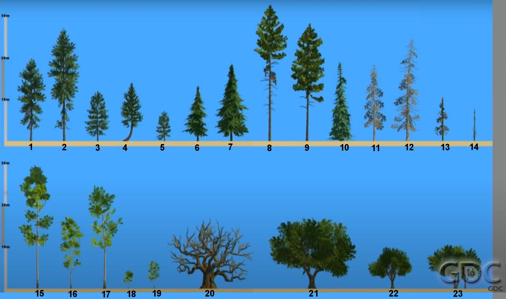

Week 1.1 — Course Introduction
Hello there! This semester we will be explorers and adventurers!
The opening session: course overview, introductions, the Parable of the Clay Pots, the full semester project structure, attendance / grading / AI policies, then the Lost Woods study (mazes in games, from Return to Zork through The Path to Catacombs of Solaris).
CTIN 389 — Course Overview
What to expect from this semester.
Goals for this Course
You will learn the techniques used to solve common design problems. You will apply design thinking in original contexts to express yourself creatively. You will practice the basic skills you learned in previous classes and become more comfortable with them.
By the end of this course, you will have completed several projects demonstrating the core techniques of designing digital experiences and be prepared to tackle a larger project in CTIN 489.
Introductions — join the Class Discord Server
In the #introductions channel, post a message:
- Your name and pronouns
- Three games you know well
- Something you’re looking forward to
Parable of the Clay Pots
From David Bayles and Ted Orland, Art & Fear.
A ceramics teacher announced on the first day of class that he was dividing the class into two groups.
All those on the left side of the studio, he said, would be graded solely on the quantity of work they produced; all those on the right would be graded solely on its quality.
For the “quantity” group, he said that on the final day of class he would bring in his bathroom scale and weigh the work: fifty pounds of pots rated an “A”, forty pounds a “B”, and so on. Those in the “quality” group, however, needed to produce only one pot — albeit a perfect one — to get an “A”.
At the end of the semester it came time to evaluate the students’ work and a curious fact emerged: the works of highest quality were all produced by the group being graded for quantity.
It seems that while the “quantity” group was busily churning out piles of work — and learning from their mistakes — the “quality” group had sat theorizing about perfection. In the end the “quality” group had little more to show for their efforts than grandiose theories and a pile of dead clay.
Course Structure — the projects
First half (Unity)
- Lost Woods Project (solo) — Due Week 2 — Make an ambiguous space. — attention and direction
- Sequencing Project (solo) — Due Week 3 — Create a level sequence with “keys” and “doors.” — triggers and interaction
- Racing Project (pairs) — Due Week 4 — Use vehicular movement to make a racetrack. — momentum and artificial intelligence
- Quandary Project (pairs) — Due Week 5 — Make an experience that offers a choice. — spatial communication and guidance
- Anticipation Project (pairs) — Due Week 6 — Tell a story that ends with a surprise. — user interface and narrative arc
- Reinterpretation Project (pairs) — Due Week 7 — Approach a previous prompt from a different angle. — prototyping and iteration
Fall Break — Week 7
Second half (Unreal + exploration)
- Unreal Project (pairs) — Due Week 9 — Make a game in Unreal Engine. — engines and technology
- Video Game Remake Project (pairs) — Due Week 11 — Remake a previous project in Unreal. — iteration and adaptation
- Engine Exploration Project (solo) — Due Week 11 — Make a game in another engine. — tools and affordances
- Final Project (pairs) — Due Week 15 — Make a game that expresses an ideology. — learning systems and complex expression
Why so many small projects?
One of the key takeaways from this class is practice scoping small projects.
In the first three weeks of CTIN 489, you will be making a new prototype each week. In this class, we’re going to spend most of the semester doing the same thing so that it will be old hat by the time you have to do it for Intermediate.
None of these one-week projects is going to be highly detailed. They’re all going to be small versions of ideas that you could expand on in more time.
I want you to get good at getting things into engine quickly so that you can make larger projects more effectively in the future.
Weekly Rhythm
Mondays — Project Introductions, Playtests
Thursdays — Lecture, Tools & Techniques, Discussion of Readings, Demonstrations, Exercises
Attendance
If you are sick, you should not come to class. If you are not sick, you should come to class.
- Your first 2 absences will not affect your grade.
- If you are absent 3 or 4 times, you will have a total of 5% deducted from your final grade.
- If you are absent 5 or more times, you will have 10% deducted from your final grade for each additional absence.
- If you are more than 20 minutes late to class, it will count as an absence.
Assignments and Grading
We will be conducting playtests every week and you will get feedback on your projects in class. Your grade will be based solely on:
- Did you address the prompt?
- Is there evidence that each team member spent 6–10 hours for the week on this project?
| Project | Weight |
|---|---|
| Lost Woods Project | 5% |
| Sequencing Project | 5% |
| Racing Project | 10% |
| Quandary Project | 10% |
| Anticipation Project | 10% |
| Reinterpretation Project | 10% |
| Unreal Project | 10% |
| Remake Project | 10% |
| Engine Project | 10% |
| Final Project | 10% |
| Class Participation | 5% |
Resources
- Google Drive — slides, readings, demos, turn-in — http://bit.ly/3HM23Xt
- Discord — class communications — http://bit.ly/4oRqN1i
- Instructor email:
mmoser@cinema.usc.edu - Student Assistants: Quinn Callaghan (
qcallagh@usc.edu), Rosie Gao (haoyugao@usc.edu) - Office hours: Thursday 1–2pm on Zoom
You have a library of demo projects and prototypes from CTIN 289. Don’t be afraid to refer to them, copy code from them, or use them as a starting point for new projects. Did you make a journal of common techniques and useful code snippets? Use it! You do not need to provide credit for these resources.
Make use of the Unity Asset Store, and other sources of game assets. You don’t need to (and shouldn’t!) do all the modeling, illustration, animating, audio engineering, etc. Your time on each project is very limited. Save your effort for where it matters most.
It’s normal and good to copy or adapt someone else’s code. If you copy 3 or more lines and do not modify them, you must provide credit.
Providing Credit
Make sure you provide credit (usually just a URL) for all art, sound, and other assets that you don’t personally make, as well as code following the rule above.
You will keep a single Google doc on our drive. Make a header for each project. As you use assets or copy code for each project, put the links under its header.
There is a document in our Resources folder with examples of how to give credit for different things.
AI Policy
ChatGPT (and other AI tools like Copilot) are part of the modern programming toolkit. Don’t be afraid to ask it questions or have it write code for you. The full policy on AI is linked from the syllabus.
Be careful, however. There are some things AI is good at, and some things it’s bad at.
Good uses for AI
- automating tasks, e.g. using Copilot in Visual Studio
- producing boilerplate content
- explaining concepts
- writing basic code
- writing first-draft code
- modifying (debugging) code in simple ways
- seeing different ways of writing code
Bad uses of AI
- writing creative or original code
- tuning
- game feel
- complex debugging
Crediting AI
When you use it, give credit, including the sequence of prompts.
- Do use it for code (with caveats), and for concept art.
- Don’t use it to write email, documentation, story, or for anything written in words for humans to read.
Study — Lost Woods
The art of getting lost and finding your way.
When was the last time you got lost?
When I was in college, my parents took me and my sister to Italy and I spent an afternoon with the aim to get lost in Venice.
Mazes — Navigation and Traversal
Video games have a long history of using mazes as obstacles or challenges. But simple mazes are rarely satisfying experiences for players.
- Why not?
- What makes a maze more satisfying?

Return to Zork (1993) — a 1993 CD-ROM adventure game held in extremely high regard as a product of its time. It contains more than one example of a first-person maze that presents a simple, brute-force obstacle to the player. These mazes suck.This sort of maze was a popular aesthetic in the mid to late 20th century, akin to the try-and-die dungeon design of OSR D&D like the Tomb of Horrors.
There was a huge secondary market for “strategy guides” and 1-900 tip lines that just compiled maps so that you wouldn’t have to painstakingly draw them out yourself. (King’s Quest V, 1990.)
Lost Woods — the alternative
Mazes-as-mapping-exercises have fallen out of favor in recent decades.
There’s not a lot of nuance to the frustration of not being able to find your way, and there’s not a lot of satisfaction to be had from rote memorization of a safe route.
But there’s another way to think about maze spaces in games, and that’s as a guided experience. Mazes can make players disoriented, but they can also be opportunities to make them feel clever and give them a sense of mastery over a dangerous or mysterious environment.
Ocarina of Time — guiding the player
Ocarina of Time (1998) — Lost Woods.
The Lost Woods in Ocarina of Time aren’t just a maze. The game tells you what to pay attention to and your attention guides you through the space.
You can brute force this puzzle. You can draw or follow a map. But you don’t have to, because the game gives you the tools you need to find your way.
You might feel lost, but the game gives you a path to follow.
Beauty and the Beast — the wolf attack
Beauty and the Beast (1991) — Wolf Attack.
Instructor notes
Show beginning, then wolf attack begins at 2:45.
Breath of the Wild — the Lost Woods solve
Breath of the Wild (2016) — the Lost Woods solve. “Follow the wind, the fire shows the way.”
Instructor notes
What are the waypoints? How does the player know which way they are going? How do they know whether they have been somewhere before?
Alan Wake — light in the dark forest
Alan Wake Remastered (2010, 2012).
The Path — wandering and consequence
The Path (2009) — Scarlet. The game cycles through Start → Fail → Restart → Camp → End.
Catacombs of Solaris — the impressionist maze

Catacombs of Solaris Revisited (2016/2021) — Start → Fail.Assignment — Lost Woods Project
Due: Thursday September 4 Team: Solo Perspective: 3D, first-person Engine: Unity URP
Create a 3D first-person perspective scene featuring a forest. It should be large and incorporate trees and plants so that the player cannot see past their immediate surroundings. Use color, lighting, framing, and sound to guide the player out of the forest. Use the character controller and assets in the Lost Woods Template project.
Submit a zipped Windows build to the Drive and be prepared to playtest it in class a week from Thursday.
Forest Assets

Low Poly Forest Collection assets from itch.io — included in the Lost Forest Template.Your project should use the sample project Lost Forest Template, which includes the BasicFPCC script. This package includes the Low Poly Forest Collection assets from itch.io.
I don’t want you to spend a lot of time looking for assets for this project, so I’m making this set available. Please keep in mind that you cannot publish anything that uses these assets or use them for another project (unless you purchase the assets yourself).

Firewatch’s tree set — the whole game only uses 23 tree models. Most of the forest is made up of just 14 models, scaled, rotated, and angled to create the illusion of variety.Firewatch is a game that’s all about the forest: walking through the forest, looking at the forest, etc. The whole game only has 23 tree models. Most of the forest is made up of just 14 models. They are scaled, rotated, and angled to create the illusion of variety.
Assignment — Reading
Algorithms to Live By by Brian Christian & Tom Griffiths — Chapter 2: Explore/Exploit.
Read by Thursday. We will discuss in class.
This book, subtitled The Computer Science of Human Decisions, takes a statistical and algorithmic approach to understanding psychology and behavioral economics. This chapter is about the tension between searching for new information and using the information you have. It’s a big chunk of reading, but it’s very interesting both as an investigation into making decisions and insight into how to design interesting decisions for your players.
See You Next Time
Do the reading! We will discuss on Thursday.
Lost Woods is due next Thursday, September 4.
Related
- Assignment - Lost Woods Project
- Reading - Algorithms to Live By, Chapter 2 - Explore-Exploit (Christian & Griffiths)
- Reading - Art & Fear (Bayles and Orland)
- Week 1.2 - Lost Woods
- CTIN 389 - Project Structure
- CTIN 389 - AI Policy
- Game - Return to Zork
- Game - Ocarina of Time
- Game - Breath of the Wild
- Game - Alan Wake
- Game - The Path
- Game - Catacombs of Solaris
- Game - Firewatch
- Film - Beauty and the Beast (1991)